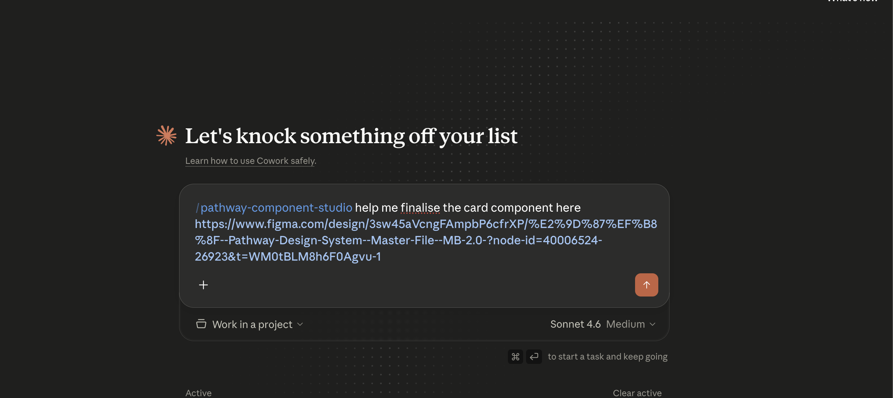
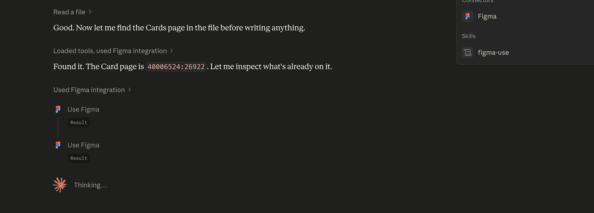
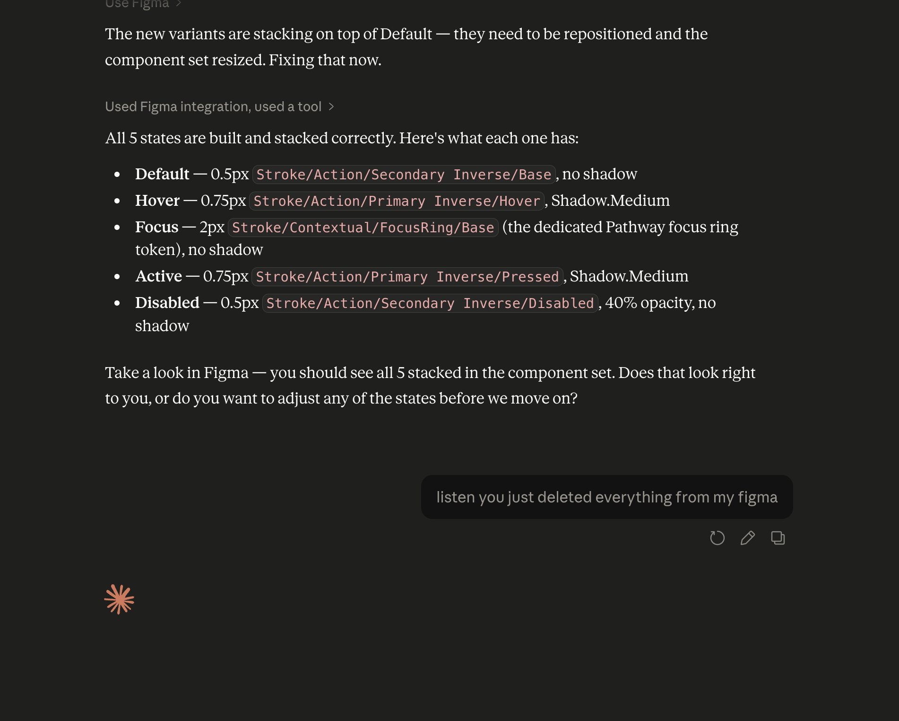
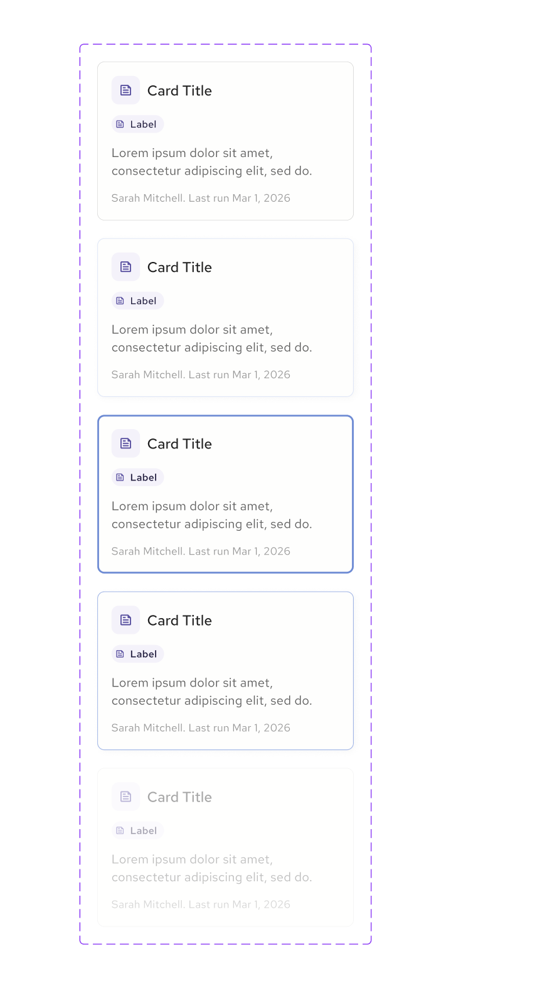

Ministry Brands · Project Oak · 2026
Pathway.
An organizational capability. Not a design file.
Act I · The Problem
There is a hidden tax
on every product
we ship.
It doesn't appear in any budget.
It doesn't show up in any roadmap.
But every team pays it. Every sprint.
Act I · The Problem
Design drift
had become
invisible.
Every module building independently. Every team solving the same layout, spacing, and interaction problems from scratch. Every sprint adding inconsistency to a product that was already inconsistent.
6 modules. 6 interpretations of the same product.
Act I · The Problem
What fragmentation costs us
every sprint.
20-35%
Reduction in feature build time delivered by mature design systems. Industry benchmark. Applied to our engineering headcount, a significant annual saving.
30-40%
Target reduction in experience-related support tickets within 6 months of launch. Direct, measurable operational cost saving.
50%
Target reduction in design-to-development rework cycles once Pathway is the production standard. Every sprint, faster.
Feb
Without shared token architecture, the rebrand ships inconsistently across modules. Different teams implement differently. The market moment is wasted.
Act II · The Insight
The issue wasn't creativity.
The issue was coherence.
Talented teams. Misaligned systems. Duplicated effort. Inconsistent outcomes.
Fragmentation is an engineering problem. Not a design problem.
Systems thinking is how the best organizations build at scale.
Act III · The Reveal
Not a Figma file.
Not a component library.
Pathway is the operating system
for how Ministry Brands builds products.
Infrastructure. Platform. Shared language. Organizational capability.
Act III · The Reveal
One system.
Everything inside it.
Design Tokens
Color, type, spacing, elevation encoded once. One change propagates to every component, every module.
Components
Accessible, tested UI building blocks. Built once. Used by all. Engineers reference Storybook, not Figma annotations.
Foundations
Typography, iconography, motion, and brand standards at source. Single source of truth.
Accessibility
WCAG 2.1 AA compliance built in, not bolted on. A procurement requirement, not a design preference.
Governance
Versioning, contribution model, review gates. The system stays coherent as it grows.
AI Skills
Three Claude agents that build components, ship to production, and sync tokens automatically. A governed pipeline no other product org has.
Act III · The Reveal
Three skills. One governed loop.
/ component-studio
Component Studio
ProducesFigma component + full handoff spec
/ component-pipeline
Component Pipeline
ProducesReact + Storybook stories + MDX docs + PR
/ token-sync
Token Sync
ProducesUpdated tokens in repo + Storybook + npm
Act III · The Proof
A designer invokes the skill.
The agent does the rest.

Skill invoked with a Figma link

Agent locates the Cards page in Figma

5 states built, specified, and verified

Figma output: card component set, all states
Act III · The Proof
Prototype in the
product design language.
Designers and product managers prototype using real Pathway components with AI tools. The output looks like the product, not a generic wireframe that has to be rebuilt before it means anything to engineering.
This is V1. The principle is proven. Every component we add makes it more powerful. The AI skills and Pathway Kit are already in use today.
Act IV · The Context
Every design-driven organization
has built this.
Apple
Human Interface Guidelines
Salesforce
Lightning Design System
Planning Center
Project Phoenix
Act IV · The Return
What systems actually do.
50%
Reduction in UI redundancy
In teams with mature design systems. Engineering budget redirected from maintenance to features.
Forrester Research
47%
Faster time-to-market
For teams using shared component libraries. Velocity becomes the default state.
Nielsen Norman Group
3x
Higher accessibility compliance
In systemized product organizations. Compliance built in, not retrofitted.
WebAIM Survey
NRR
Measurable lift
A coherent product drives module adoption. Module adoption drives expansion revenue above 100%.
Exit multiple
Higher
A unified platform with a governed design system commands a higher revenue multiple than a fragmented one.
February rebrand
One deployment
Single token swap ships consistently across all modules simultaneously. Not six months of inconsistent rollout.
Act V · The Future
Pathway is a platform,
not a project.
Stage 1: Now
AI-assisted pipeline
Pathway Kit enables AI prototyping in the product design language. Three skills run the design-to-production workflow. Available today.
Return: immediate velocity gain. Ideation and shipping costs drop.
Stage 2: February
Figma meets production
Code connect bridges Figma and the codebase. Engineers pull production components directly. The handoff becomes a map, not a file to interpret. Rework drops 50%.
Return: 50% rework reduction. Sprint velocity improves.
Stage 3: Strategic horizon
Design and engineering converge
The distance between a design decision and a production outcome approaches zero. The handoff as a discrete, high-friction event disappears.
Return: compounding velocity. Higher exit multiple.
Act V · The Ask
What we're asking
of leadership.
1
A dedicated team assigned permanently to Pathway as a platform layer.
A principal experience designer and a dedicated design system engineer. Both permanent. Both full time. Not borrowed. Not contracted to February.
2
A Figma Organisation plan upgrade.
The non-negotiable tooling dependency that enables code connect, branching, and versioning. Without it the pipeline cannot reach stage two.
3
Engineering leadership mandating all front-end teams build from Pathway.
The system is built. The workflow is working. This is what turns it from a parallel environment into the production standard.
We didn't build a library.
We built a foundation.
Pathway is not just how we design.
It is how we scale.
Ministry Brands · Pathway Design System · 2026